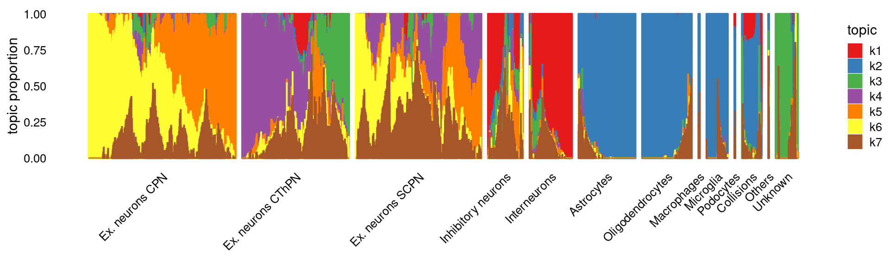

Last updated: 2022-08-04
Checks: 7 0
Knit directory: scATACseq-topics/
This reproducible R Markdown analysis was created with workflowr (version 1.7.0). The Checks tab describes the reproducibility checks that were applied when the results were created. The Past versions tab lists the development history.
Great! Since the R Markdown file has been committed to the Git repository, you know the exact version of the code that produced these results.
Great job! The global environment was empty. Objects defined in the global environment can affect the analysis in your R Markdown file in unknown ways. For reproduciblity it's best to always run the code in an empty environment.
The command set.seed(20200729) was run prior to running the code in the R Markdown file. Setting a seed ensures that any results that rely on randomness, e.g. subsampling or permutations, are reproducible.
Great job! Recording the operating system, R version, and package versions is critical for reproducibility.
Nice! There were no cached chunks for this analysis, so you can be confident that you successfully produced the results during this run.
Great job! Using relative paths to the files within your workflowr project makes it easier to run your code on other machines.
Great! You are using Git for version control. Tracking code development and connecting the code version to the results is critical for reproducibility.
The results in this page were generated with repository version 8fec89d. See the Past versions tab to see a history of the changes made to the R Markdown and HTML files.
Note that you need to be careful to ensure that all relevant files for the analysis have been committed to Git prior to generating the results (you can use wflow_publish or wflow_git_commit). workflowr only checks the R Markdown file, but you know if there are other scripts or data files that it depends on. Below is the status of the Git repository when the results were generated:
Ignored files:
Ignored: .DS_Store
Ignored: .Rhistory
Ignored: .Rproj.user/
Ignored: analysis/site_libs/
Untracked files:
Untracked: analysis/motif_analysis_Buenrostro2018_v2.Rmd
Untracked: output/clustering-Cusanovich2018.rds
Untracked: paper/
Untracked: scripts/DA_Buenrostro2018_filteredpeaks.sbatch
Untracked: scripts/analysis_Cusanovich2018_filteredpeaks.sh
Untracked: scripts/fit_poisson_nmf_Buenrostro2018_filtered_HeLabExample.R
Untracked: scripts/postfit_Buenrostro2018_filteredpeaks.sbatch
Untracked: scripts/postfit_Buenrostro2018_v2.sbatch
Unstaged changes:
Modified: analysis/assess_fits_Buenrostro2018_Chen2019pipeline.Rmd
Modified: analysis/clusters_Cusanovich2018_k13.Rmd
Modified: analysis/gene_analysis_Buenrostro2018_Chen2019pipeline.Rmd
Modified: analysis/gene_analysis_Cusanovich2018.Rmd
Modified: analysis/motif_analysis_Buenrostro2018_Chen2019pipeline.Rmd
Modified: analysis/motif_analysis_Cusanovich2018.Rmd
Modified: analysis/process_data_Cusanovich2018.Rmd
Modified: scripts/DA_analysis_Buenrostro2018_vsnull.R
Modified: scripts/analysis_Buenrostro2018_filteredpeaks.sh
Modified: scripts/fit_models_Cusanovich2018_tissues_filtered.sh
Note that any generated files, e.g. HTML, png, CSS, etc., are not included in this status report because it is ok for generated content to have uncommitted changes.
These are the previous versions of the repository in which changes were made to the R Markdown (analysis/plots_Cusanovich2018.Rmd) and HTML (docs/plots_Cusanovich2018.html) files. If you've configured a remote Git repository (see ?wflow_git_remote), click on the hyperlinks in the table below to view the files as they were in that past version.
| File | Version | Author | Date | Message |
|---|---|---|---|---|
| Rmd | 8fec89d | kevinlkx | 2022-08-04 | updated structure plots for tissue data with filtered peaks |
| html | f9ce36d | kevinlkx | 2021-02-03 | Build site. |
| Rmd | f0fc814 | kevinlkx | 2021-02-03 | added PreFrontalCortex, whole brain and kidney |
| html | 3f607ce | kevinlkx | 2021-02-02 | Build site. |
| Rmd | 0d189ac | kevinlkx | 2021-02-02 | added bone marrow plots |
| html | ad13ef4 | kevinlkx | 2020-09-11 | Build site. |
| Rmd | 6d64de6 | kevinlkx | 2020-09-11 | add t-SNE and membership pie charts |
| html | 7c0b14f | kevinlkx | 2020-09-11 | Build site. |
| Rmd | dc70e46 | kevinlkx | 2020-09-11 | add t-SNE and membership pie charts |
| html | 5a8479b | kevinlkx | 2020-09-10 | Build site. |
| Rmd | b9993e2 | kevinlkx | 2020-09-10 | initial structure plots |
Here we examine and compare the topic modeling results for the scATAC-seq dataset from the mouse single-cell atlas paper Cusanovich et al (2018)
Load the packages used in the analysis below, as well as additional functions that will be used to generate some of the plots.
library(fastTopics)
library(Matrix)
library(tools)
library(dplyr)
library(ggplot2)
library(cowplot)
library(mapplots)
source("code/plots.R")Load the data
data.dir <- "/project2/mstephens/kevinluo/scATACseq-topics/data/Cusanovich_2018/processed_data/"
load(file.path(data.dir, "Cusanovich_2018.RData"))
cat(sprintf("%d x %d counts matrix.\n",nrow(counts),ncol(counts)))
range(colSums(counts))
rm(counts)
# 81173 x 436206 counts matrix.
# [1] 40 30685About the samples: The study measured single cell chromatin accessibility for 17 samples spanning 13 different tissues in 8-week old mice.
cat(nrow(samples), "samples (cells). \n")
# 81173 samples (cells).Tissues:
samples$tissue <- as.factor(samples$tissue)
cat(length(levels(samples$tissue)), "tissues. \n")
table(samples$tissue)
# 13 tissues.
#
# BoneMarrow Cerebellum Heart Kidney
# 8403 2278 7650 6431
# LargeIntestine Liver Lung PreFrontalCortex
# 7086 6167 9996 5959
# SmallIntestine Spleen Testes Thymus
# 4077 4020 2723 7617
# WholeBrain
# 8766Cell types labels:
samples$cell_label <- as.factor(samples$cell_label)
cat(length(levels(samples$cell_label)), "cell types \n")
table(samples$cell_label)
# 40 cell types
#
# Activated B cells Alveolar macrophages
# 500 559
# Astrocytes B cells
# 1666 5772
# Cardiomyocytes Cerebellar granule cells
# 4076 4099
# Collecting duct Collisions
# 164 1218
# DCT/CD Dendritic cells
# 506 958
# Distal convoluted tubule Endothelial I (glomerular)
# 319 552
# Endothelial I cells Endothelial II cells
# 952 3019
# Enterocytes Erythroblasts
# 4783 2811
# Ex. neurons CPN Ex. neurons CThPN
# 1832 1540
# Ex. neurons SCPN Hematopoietic progenitors
# 1466 3425
# Hepatocytes Immature B cells
# 5664 571
# Inhibitory neurons Loop of henle
# 1828 815
# Macrophages Microglia
# 711 422
# Monocytes NK cells
# 1173 321
# Oligodendrocytes Podocytes
# 1558 498
# Proximal tubule Proximal tubule S3
# 2570 594
# Purkinje cells Regulatory T cells
# 320 507
# SOM+ Interneurons Sperm
# 553 2089
# T cells Type I pneumocytes
# 8954 1622
# Type II pneumocytes Unknown
# 157 10029The structure plots below summarize the topic proportions in the samples grouped by different tissues.
\(k = 13\):
fit.dir <- "/project2/mstephens/kevinluo/scATACseq-topics/output/Cusanovich_2018"
fit <- readRDS(file.path(fit.dir, "/fit-Cusanovich2018-scd-ex-k=13.rds"))$fit
samples$tissue <- as.factor(samples$tissue)set.seed(1)
topic_colors <- c("gold","royalblue","red","sienna","limegreen",
"plum","tomato","purple","cyan","forestgreen",
"darkblue","darkorange","lightgray")
topics <- c(1,2,5,6,9,11,4,10,8,3,7,12,13)
p.structure <- structure_plot(fit,grouping = samples$tissue,gap = 30,n = 4000,
perplexity = 30,topics = topics,colors = topic_colors,
verbose = FALSE)
print(p.structure)Plot samples by tissues on the t-SNE coordinates provided by the original paper:
colors_tissues <- c("BoneMarrow" = "darkblue",
"Lung" = "lightblue",
"Thymus" = "orange",
"Spleen" = "pink",
"Liver" = "purple",
"Testes" = "yellow",
"SmallIntestine" = "darkgreen",
"LargeIntestine" = "brown",
"Kidney" = "green",
"Heart" = "red",
"WholeBrain" = "gray",
"PreFrontalCortex" = "black",
"Cerebellum" = "darkgray")
colors_tissues <- colors_tissues[order(names(colors_tissues))]
dat <- samples[, c("tsne_1", "tsne_2", "tissue")]
ggplot(dat, aes(x = tsne_1, y = tsne_2, colour=tissue)) +
geom_point(size = 0.5, na.rm = TRUE) +
scale_colour_manual(values=colors_tissues) +
labs(x = 't-SNE 1', y = 't-SNE 2', title = '') +
theme_cowplot()
| Version | Author | Date |
|---|---|---|
| 3f607ce | kevinlkx | 2021-02-02 |
Load the data
data.dir <- "/project2/mstephens/kevinluo/scATACseq-topics/data/Cusanovich_2018/processed_data"
load(file.path(data.dir, "Cusanovich_2018_PreFrontalCortex.RData"))
cat(sprintf("%d x %d counts matrix.\n",nrow(counts),ncol(counts)))
range(colSums(counts))
rm(counts)
# 5959 x 351832 counts matrix.
# [1] 20 2651Cell types labels:
cat(nrow(samples), "samples (cells). \n")
samples$cell_label <- as.factor(samples$cell_label)
cat(length(levels(samples$cell_label)), "cell types \n")
table(samples$cell_label)
cat("cell type groups: \n")
samples$cell_group <- as.character(samples$cell_label)
samples$cell_group[grep("Endothelial", samples$cell_group)] <- "Endothelial cells"
samples$cell_group[grep("Interneurons", samples$cell_group)] <- "Interneurons"
samples$cell_group[samples$cell_group %in% names(which(table(samples$cell_group) <= 5))] <- "Others"
table(samples$cell_group)
samples$cell_group <- factor(samples$cell_group, levels = c("Ex. neurons CPN", "Ex. neurons CThPN", "Ex. neurons SCPN",
"Inhibitory neurons", "Interneurons",
"Astrocytes", "Oligodendrocytes",
"Macrophages", "Microglia", "Podocytes",
"Collisions", "Others", "Unknown"))
# 5959 samples (cells).
# 22 cell types
#
# Astrocytes B cells Cerebellar granule cells
# 551 4 1
# Collisions Dendritic cells Endothelial I cells
# 177 2 9
# Endothelial II cells Ex. neurons CPN Ex. neurons CThPN
# 77 1391 995
# Ex. neurons SCPN Immature B cells Inhibitory neurons
# 1160 1 320
# Macrophages Microglia Monocytes
# 12 197 1
# Oligodendrocytes Podocytes Purkinje cells
# 458 10 1
# Regulatory T cells SOM+ Interneurons T cells
# 1 386 1
# Unknown
# 204
# cell type groups:
#
# Astrocytes Collisions Endothelial cells Ex. neurons CPN
# 551 177 86 1391
# Ex. neurons CThPN Ex. neurons SCPN Inhibitory neurons Interneurons
# 995 1160 320 386
# Macrophages Microglia Oligodendrocytes Others
# 12 197 458 12
# Podocytes Unknown
# 10 204The structure plots below summarize the topic proportions in the samples grouped by different cell labels.
\(k = 7\)
fit.dir <- "/project2/mstephens/kevinluo/scATACseq-topics/output/Cusanovich_2018/tissues"
fit <- readRDS(file.path(fit.dir, "/fit-Cusanovich2018-PreFrontalCortex-scd-ex-k=7.rds"))$fit
set.seed(1)
p.structure <- structure_plot(fit,
grouping = samples$cell_group,
n = 4000, gap = 40, perplexity = 50,
topics = 1:7, num_threads = 6,verbose = FALSE)
print(p.structure)
| Version | Author | Date |
|---|---|---|
| f9ce36d | kevinlkx | 2021-02-03 |
\(k = 8\)
fit.dir <- "/project2/mstephens/kevinluo/scATACseq-topics/output/Cusanovich_2018/tissues"
fit <- readRDS(file.path(fit.dir, "/fit-Cusanovich2018-PreFrontalCortex-scd-ex-k=8.rds"))$fit
set.seed(1)
p.structure <- structure_plot(fit,
grouping = samples$cell_group,
n = 4000, gap = 40, perplexity = 50,
topics = 1:8, num_threads = 6,verbose = FALSE)
print(p.structure)\(k = 9\)
fit.dir <- "/project2/mstephens/kevinluo/scATACseq-topics/output/Cusanovich_2018/tissues"
fit <- readRDS(file.path(fit.dir, "/fit-Cusanovich2018-PreFrontalCortex-scd-ex-k=9.rds"))$fit
set.seed(1)
p.structure <- structure_plot(fit,grouping = samples$cell_group,
gap = 30,n = 4000, perplexity = 30,
topics = 1:9, colors = topic_colors, verbose = FALSE)
print(p.structure)\(k = 10\)
fit.dir <- "/project2/mstephens/kevinluo/scATACseq-topics/output/Cusanovich_2018/tissues"
fit <- readRDS(file.path(fit.dir, "/fit-Cusanovich2018-PreFrontalCortex-scd-ex-k=10.rds"))$fit
set.seed(1)
p.structure <- structure_plot(fit,grouping = samples$cell_group,
gap = 30,n = 4000, perplexity = 30,
topics = 1:10, colors = topic_colors, verbose = FALSE)
print(p.structure)Load the data
data.dir <- "/project2/mstephens/kevinluo/scATACseq-topics/data/Cusanovich_2018/processed_data/"
load(file.path(data.dir, "Cusanovich_2018_Kidney.RData"))
cat(sprintf("%d x %d counts matrix.\n",nrow(counts),ncol(counts)))
range(colSums(counts))
rm(counts)
# 6431 x 270864 counts matrix.
# [1] 20 2988Cell types labels:
cat(nrow(samples), "samples (cells). \n")
samples$cell_label <- as.factor(samples$cell_label)
cat(length(levels(samples$cell_label)), "cell types \n")
table(samples$cell_label)
samples$cell_group <- as.character(samples$cell_label)
samples$cell_group[grep("Endothelial", samples$cell_group)] <- "Endothelial cells"
samples$cell_group[grep("T cells", samples$cell_group)] <- "T cells"
samples$cell_group[grep("B cells", samples$cell_group)] <- "B cells"
samples$cell_group[grep("DCT/CD", samples$cell_group)] <- "Distal convoluted tubule/Collecting duct"
samples$cell_group[samples$cell_group %in% names(which(table(samples$cell_group) <= 5))] <- "Others"
table(samples$cell_group)
samples$cell_group <- factor(samples$cell_group, levels = c("Podocytes", "Proximal tubule", "Proximal tubule S3",
"Loop of henle", "Distal convoluted tubule",
"Distal convoluted tubule/Collecting duct",
"Collecting duct", "Endothelial cells",
"Others", "Unknown"))
# 6431 samples (cells).
# 26 cell types
#
# Activated B cells Alveolar macrophages
# 10 1
# B cells Collecting duct
# 27 164
# Collisions DCT/CD
# 1 499
# Dendritic cells Distal convoluted tubule
# 13 319
# Endothelial I (glomerular) Endothelial I cells
# 534 24
# Endothelial II cells Enterocytes
# 15 1
# Hematopoietic progenitors Hepatocytes
# 5 1
# Loop of henle Macrophages
# 814 50
# Monocytes NK cells
# 3 3
# Podocytes Proximal tubule
# 447 2565
# Proximal tubule S3 Regulatory T cells
# 594 8
# Sperm T cells
# 1 18
# Type II pneumocytes Unknown
# 1 313
#
# B cells
# 37
# Collecting duct
# 164
# Dendritic cells
# 13
# Distal convoluted tubule
# 319
# Distal convoluted tubule/Collecting duct
# 499
# Endothelial cells
# 573
# Loop of henle
# 814
# Macrophages
# 50
# Others
# 17
# Podocytes
# 447
# Proximal tubule
# 2565
# Proximal tubule S3
# 594
# T cells
# 26
# Unknown
# 313The structure plots below summarize the topic proportions in the samples grouped by different cell labels.
\(k = 7\)
fit.dir <- "/project2/mstephens/kevinluo/scATACseq-topics/output/Cusanovich_2018/tissues"
fit <- readRDS(file.path(fit.dir, "/fit-Cusanovich2018-Kidney-scd-ex-k=7.rds"))$fit
set.seed(1)
p.structure <- structure_plot(fit,grouping = samples$cell_group,
gap = 30,n = 4000, perplexity = 30,
topics = 1:7, colors = topic_colors, verbose = FALSE)
print(p.structure)\(k = 8\)
fit.dir <- "/project2/mstephens/kevinluo/scATACseq-topics/output/Cusanovich_2018/tissues"
fit <- readRDS(file.path(fit.dir, "/fit-Cusanovich2018-Kidney-scd-ex-k=8.rds"))$fit
set.seed(1)
p.structure <- structure_plot(fit,grouping = samples$cell_group,
gap = 30,n = 4000, perplexity = 30,
topics = 1:8, colors = topic_colors, verbose = FALSE)
print(p.structure)\(k = 9\)
fit.dir <- "/project2/mstephens/kevinluo/scATACseq-topics/output/Cusanovich_2018/tissues"
fit <- readRDS(file.path(fit.dir, "/fit-Cusanovich2018-Kidney-scd-ex-k=9.rds"))$fit
set.seed(1)
p.structure <- structure_plot(fit,grouping = samples$cell_group,
gap = 30,n = 4000, perplexity = 30,
topics = 1:9, colors = topic_colors, verbose = FALSE)
print(p.structure)
| Version | Author | Date |
|---|---|---|
| f9ce36d | kevinlkx | 2021-02-03 |
\(k = 10\)
fit.dir <- "/project2/mstephens/kevinluo/scATACseq-topics/output/Cusanovich_2018/tissues"
fit <- readRDS(file.path(fit.dir, "/fit-Cusanovich2018-Kidney-scd-ex-k=10.rds"))$fit
set.seed(1)
p.structure <- structure_plot(fit,grouping = samples$cell_group,
gap = 30,n = 4000, perplexity = 30,
topics = 1:10, colors = topic_colors, verbose = FALSE)
print(p.structure)
sessionInfo()
# R version 4.0.4 (2021-02-15)
# Platform: x86_64-pc-linux-gnu (64-bit)
# Running under: Scientific Linux 7.4 (Nitrogen)
#
# Matrix products: default
# BLAS/LAPACK: /software/openblas-0.3.13-el7-x86_64/lib/libopenblas_haswellp-r0.3.13.so
#
# locale:
# [1] LC_CTYPE=en_US.UTF-8 LC_NUMERIC=C
# [3] LC_TIME=en_US.UTF-8 LC_COLLATE=en_US.UTF-8
# [5] LC_MONETARY=en_US.UTF-8 LC_MESSAGES=en_US.UTF-8
# [7] LC_PAPER=en_US.UTF-8 LC_NAME=C
# [9] LC_ADDRESS=C LC_TELEPHONE=C
# [11] LC_MEASUREMENT=en_US.UTF-8 LC_IDENTIFICATION=C
#
# attached base packages:
# [1] tools stats graphics grDevices utils datasets methods
# [8] base
#
# other attached packages:
# [1] mapplots_1.5.1 cowplot_1.1.1 ggplot2_3.3.5 dplyr_1.0.8
# [5] Matrix_1.4-1 fastTopics_0.6-135 workflowr_1.7.0
#
# loaded via a namespace (and not attached):
# [1] mcmc_0.9-7 fs_1.5.2 progress_1.2.2 httr_1.4.2
# [5] rprojroot_2.0.2 bslib_0.3.1 utf8_1.2.2 R6_2.5.1
# [9] irlba_2.3.5 uwot_0.1.11 DBI_1.1.2 lazyeval_0.2.2
# [13] colorspace_2.0-3 withr_2.5.0 tidyselect_1.1.2 prettyunits_1.1.1
# [17] processx_3.5.3 compiler_4.0.4 git2r_0.30.1 cli_3.2.0
# [21] quantreg_5.88 SparseM_1.81 plotly_4.10.0 labeling_0.4.2
# [25] sass_0.4.1 scales_1.2.0 SQUAREM_2021.1 quadprog_1.5-8
# [29] callr_3.7.0 pbapply_1.5-0 mixsqp_0.3-43 stringr_1.4.0
# [33] digest_0.6.29 rmarkdown_2.13 MCMCpack_1.6-1 pkgconfig_2.0.3
# [37] htmltools_0.5.2 highr_0.9 fastmap_1.1.0 invgamma_1.1
# [41] htmlwidgets_1.5.4 rlang_1.0.2 rstudioapi_0.13 farver_2.1.0
# [45] jquerylib_0.1.4 generics_0.1.2 jsonlite_1.8.0 magrittr_2.0.3
# [49] Rcpp_1.0.9 munsell_0.5.0 fansi_1.0.3 lifecycle_1.0.1
# [53] stringi_1.7.6 whisker_0.4 yaml_2.3.5 MASS_7.3-56
# [57] Rtsne_0.15 grid_4.0.4 parallel_4.0.4 promises_1.2.0.1
# [61] ggrepel_0.9.1 crayon_1.5.1 lattice_0.20-45 hms_1.1.1
# [65] knitr_1.38 ps_1.6.0 pillar_1.7.0 glue_1.6.2
# [69] evaluate_0.15 getPass_0.2-2 data.table_1.14.2 RcppParallel_5.1.5
# [73] vctrs_0.4.1 httpuv_1.6.5 MatrixModels_0.5-0 gtable_0.3.0
# [77] purrr_0.3.4 tidyr_1.2.0 assertthat_0.2.1 ashr_2.2-54
# [81] xfun_0.30 coda_0.19-4 later_1.3.0 viridisLite_0.4.0
# [85] truncnorm_1.0-8 tibble_3.1.6 ellipsis_0.3.2